|
|
| sponges text index | photo index |
| Phylum Porifera |
| Yellow
volcano sponge Spheciospongia sp.* Family Clionaidae updated Oct 2016 Where seen? This yellow sponge capped with cones that look like mini-volcanos is commonly seen on many of our shores, growing among coral rubble. Features: 10-15cm. The sponge has a large base, usually globular with many small knobs on the sides. It is topped with several tall cones with large holes at the tips. When submerged, the holes are often open wide producing a strong 'eruption' or outflow that stirs the water surface. But out of water, the holes are closed and the cones are puckered up. Colours usually bright yellow to brownish orange. The sponge may start by boring into calcium carbonate of dead corals, but they are not extensive excavators like some other members of this family. |
|
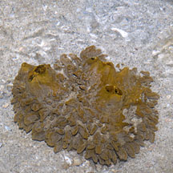 Terumbu Hantu, Apr 11 |
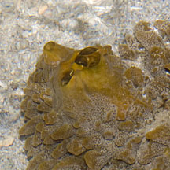 When submerged, produces an 'eruption' of water flow. |
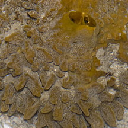 |
|
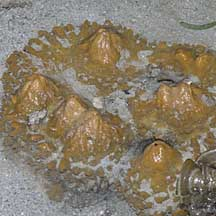 Terumbu Semakau, Mar 11 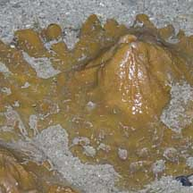 |
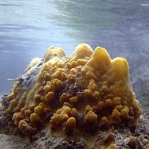 Beting Bemban Besar, May 10 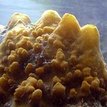 |
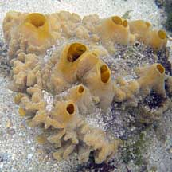 Terumbu Buran, Nov 10 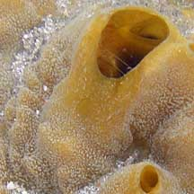 |
*Species are difficult to positively identify without close examination.
On this website, they are grouped by external features for convenience of display.
| Yellow volcano sponges on Singapore shores |
On wildsingapore
flickr
|
| Other sightings on Singapore shores |
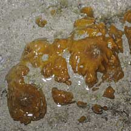 Pulau Sudong, Dec 09 |
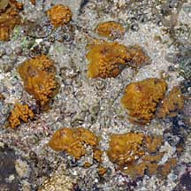 Pulau Biola, Dec 09 |
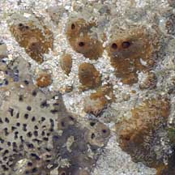 Terumbu Salu, Jan 10 |
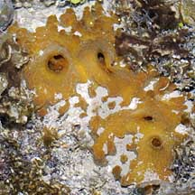 Pulau Salu, Jun 10 |
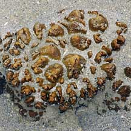 Terumbu Berkas, Jan 10 |
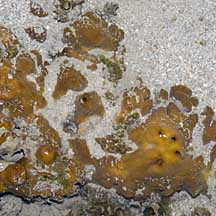 Pulau Berkas, May 10 |
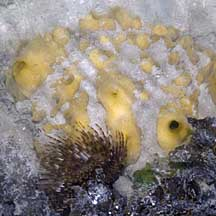 Pulau Senang, Jun 10 |
|
Links
References
|